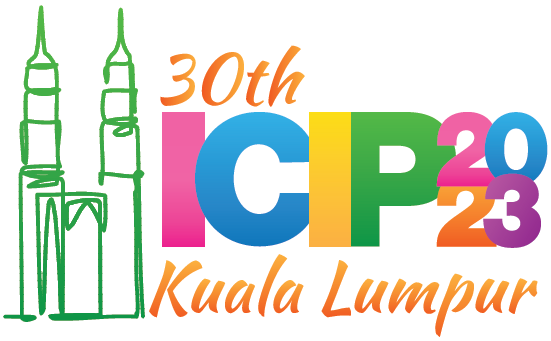
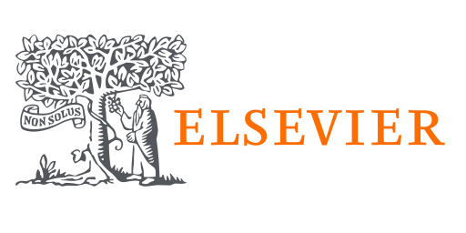

Selected Publications
MR-VNet: Media Restoration using Volterra Networks
Authors: Siddharth Roheda, Amit Unde, Loay Rashid
This research paper presents a novel class of restoration network architecture based on the Volterra series formulation. By incorporating non-linearity into the system response function through higher order convolutions instead of traditional activation functions, we introduce a general framework for image/video restoration. Through extensive experimentation, we demonstrate that our proposed architecture achieves state-of-the-art (SOTA) performance in the field of Image/Video Restoration. Moreover, we establish that the recently introduced Non-Linear Activation Free Network (NAF-NET) can be considered a special case within the broader class of Volterra Neural Networks. These findings highlight the potential of Volterra Neural Networks as a versatile and powerful tool for addressing complex restoration tasks in computer vision.
Volterra Neural Networks (VNNs)
Authors: Siddharth Roheda, Hamid Krim, Bo Jiang
The importance of inference in Machine Learning (ML) has led to an explosive number of different proposals in ML, and particularly in Deep Learning. In an attempt to reduce the complexity of Convolutional Neural Networks, we propose a Volterra filter-inspired Network architecture. This architecture introduces controlled non-linearities in the form of interactions between the delayed input samples of data. We propose a cascaded implementation of Volterra Filtering so as to significantly reduce the number of parameters required to carry out the same classification task as that of a conventional Neural Network. We demonstrate an efficient parallel implementation of this Volterra Neural Network (VNN), along with its remarkable performance while retaining a relatively simpler and potentially more tractable structure. Furthermore, we show a rather sophisticated adaptation of this network to nonlinearly fuse the RGB (spatial) information and the Optical Flow (temporal) information of a video sequence for action recognition. The proposed approach is evaluated on UCF-101 and HMDB-51 datasets for action recognition, and is shown to outperform state of the art CNN approaches.

Fast Optimal Transport for Latent Domain Adaptation
Authors: Siddharth Roheda, Ashkan Panahi, Hamid Krim
In this paper, we address the problem of unsupervised Domain Adaptation. The need for such an adaptation arises when the distribution of the target data differs from that which is used to develop the model and the ground truth information of the target data is unknown. We propose an algorithm that uses optimal transport theory with a verifiably efficient and implementable solution to learn the best latent feature representation. This is achieved by minimizing the cost of transporting the samples from the target domain to the distribution of the source domain.

Event Driven Sensor Fusion
Authors: Siddharth Roheda, Hamid Krim, Zhi-Quan Luo, Tianfu Wu
This paper presents a technique which exploits the occurrence of certain events as observed by different sensors, to detect and classify objects. This technique explores the extent of dependence between features being observed by the sensors, and generates more informed probability distributions over the events. Provided some additional information about the features of the object, this fusion technique can outperform other existing decision level fusion approaches that may not take into account the relationship between different features. Furthermore, this paper addresses the issue of coping with damaged sensors when using the model, by learning a hidden space between sensor modalities which can be exploited to safeguard detection performance.
Latent Code-Based Fusion: A Volterra Neural Network Approach
Authors: Sally Ghanem, Siddharth Roheda, Hamid Krim
We propose a deep structure encoder using Volterra Neural Networks (VNNs) to seek a latent representation of multi-modal data whose features are jointly captured by a union of subspaces. The so-called self-representation embedding of the latent codes leads to a simplified fusion which is driven by a similarly constructed decoding. The Volterra Filter architecture achieved reduction in parameter complexity is primarily due to controlled non-linearities being introduced by the higher-order convolutions in lieu of generalized activation functions. Experimental results on two different datasets have shown a significant improvement in the clustering performance for VNNs auto-encoder over conventional Convolutional Neural Networks (CNNs) auto-encoder. In addition, we also show that the proposed approach demonstrates a much-improved sample complexity over CNN-based auto-encoder with a robust classification performance.
Conquering The CNN Over-Parameterization Dilemma: A Volterra Filtering Approach For Action Recognition
Authors: Siddharth Roheda, Hamid Krim
The importance of inference in Machine Learning (ML) has led to an explosive number of different proposals in ML, and particularly in Deep Learning. In an attempt to reduce the complexity of Convolutional Neural Networks, we propose a Volterra filter-inspired Network architecture. This architecture introduces controlled non-linearities in the form of interactions between the delayed input samples of data. We propose a cascaded implementation of Volterra Filtering so as to significantly reduce the number of parameters required to carry out the same classification task as that of a conventional Neural Network. We demonstrate an efficient parallel implementation of this Volterra Neural Network (VNN), along with its remarkable performance while retaining a relatively simpler and potentially more tractable structure. Furthermore, we show a rather sophisticated adaptation of this network to nonlinearly fuse the RGB (spatial) information and the Optical Flow (temporal) information of a video sequence for action recognition. The proposed approach is evaluated on UCF-101 and HMDB-51 datasets for action recognition, and is shown to outperform state of the art CNN approaches.
Robust Multi-Modal Sensor Fusion: An Adversarial Approach
Authors: Siddharth Roheda, Hamid Krim, Benjamin S Riggan
In recent years, multi-modal fusion has attracted a lot of research interest, both in academia, and in industry. Multimodal fusion entails the combination of information from a set of different types of sensors. Exploiting complementary information from different sensors, we show that target detection and classification problems can greatly benefit from this fusion approach and result in a performance increase. To achieve this gain, the information fusion from various sensors is shown to require some principled strategy to ensure that additional information is constructively used, and has a positive impact on performance. We subsequently demonstrate the viability of the proposed fusion approach by weakening the strong dependence on the functionality of all sensors, hence introducing additional flexibility in our solution and lifting the severe limitation in unconstrained surveillance settings with potential environmental impact. Our proposed data driven approach to multimodal fusion, exploits selected optimal features from an estimated latent space of data across all modalities. This hidden space is learned via a generative network conditioned on individual sensor modalities. The hidden space, as an intrinsic structure, is then exploited in detecting damaged sensors, and in subsequently safeguarding the performance of the fused sensor system. Experimental results show that such an approach can achieve automatic system robustness against noisy/damaged sensors.
Cross-Modality Distillation: A Case for Conditional Generative Adversarial Networks
Authors: Siddharth Roheda, Benjamin S Riggan, Hamid Krim, Liyi Dai
In this paper, we propose to use a Conditional Generative Adversarial Network (CGAN) for distilling (i.e. transferring) knowledge from sensor data and enhancing low-resolution target detection. In unconstrained surveillance settings, sensor measurements are often noisy, degraded, corrupted, and even missing/absent, thereby presenting a significant problem for multi-modal fusion. We therefore specifically tackle the problem of a missing modality in our attempt to propose an algorithm based on CGANs to generate representative information from the missing modalities when given some other available modalities. Despite modality gaps, we show that one can distill knowledge from one set of modalities to another. Moreover, we demonstrate that it achieves better performance than traditional approaches and recent teacher-student models.
Decision Level Fusion: An Event Driven Approach
Authors: Siddharth Roheda, Hamid Krim, Zhi-Quan Luo, Tianfu Wu
This paper presents a technique that combines the occurrence of certain events, as observed by different sensors, in order to detect and classify objects. This technique explores the extent of dependence between features being observed by the sensors, and generates more informed probability distributions over the events. Provided some additional information about the features of the object, this fusion technique can outperform other existing decision level fusion approaches that may not take into account the relationship between different features.